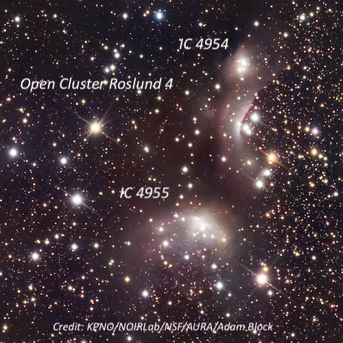
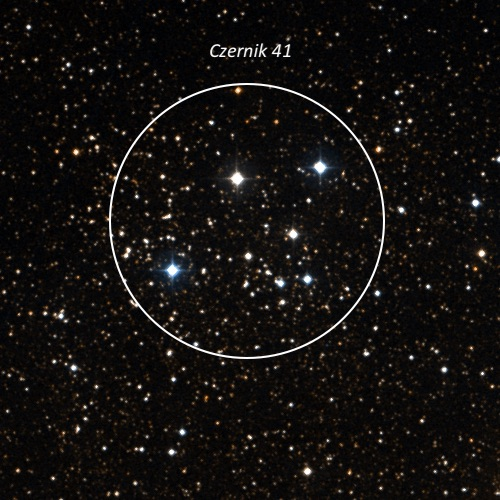
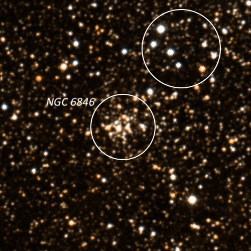
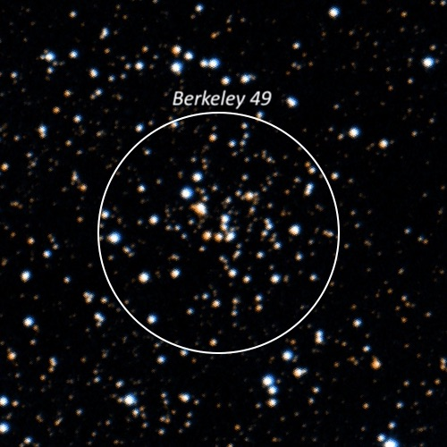
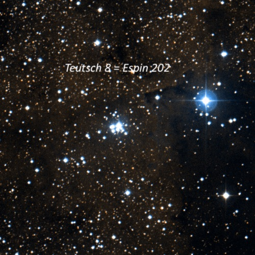
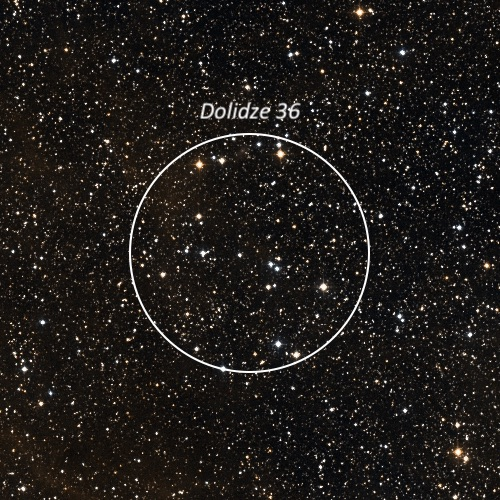
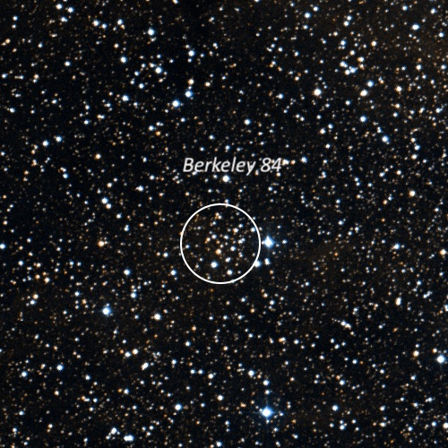
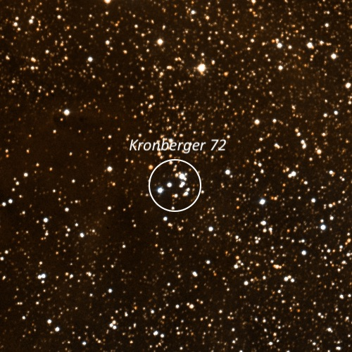

OR: Lake Sonoma on Sep. 5, 2026
Earlier in the week I posted an OI for Lake Sonoma on Saturday night (Labor Day weekend). I received positive responses from Jim Molinari, Ziad Khoury, Raghu, and Randy John. In addition, long-time regular Matt Marcus showed up with his C-8. I ended up with the 4th largest scope on the lot with my 14.5” Starmaster (I generally leave my 24” Starstructure at home for one-night stands) as Ziad brought his 17.5" Discovery dob, Jim Molinari had his 18" Hubble Optics telescope, and Randy John observed with an 18" Obsession.
When I arrived about a half hour before sunset, Jim was setting up and there were clouds along the horizon in the south and southwest. Soon Matt pulled into the lot, and others weren’t far behind. The night ended up clear as predicted and basically dead calm with comfortable temps and no dew. I only took one SQM reading later in the night at 21.33, which is roughly average for the site, though the naked-eye Milky Way appeared somewhat washed out to me. Most stayed until at least midnight and Ziad, Randy, and I watched the crescent moon rise in the east at about 2:25, before shutting down.
For a change of pace, I decided to observe some obscure Milky Way open clusters, or at least ones that I hadn't observed in over 30 years. I printed off finder charts using MegaStar, as well as from Mike Swan's "Atlas of Open Star Clusters". In addition, I took a look at a few new UGC galaxies in Draco and Hercules that were between mag 14.5-15.0, and a new supernova in NGC 7331.
Type Ia SN 2026aaiv was discovered just 4 days earlier on Sept. 1st at roughly mag 17, but it has risen rapidly in brightness and I was surprised to find it visible as a 14th mag "star" just 20" E and 20" S of center, at the edge of the bright core region. It was easily seen when the seeing was sharper and appeared brighter than a star of magnitude V = 14.06 situated 1.5' NE of center.
At the end of night, I had a fine view of Saturn through Ziad’s scope, as well as Neptune and Triton, which was near its greatest easterly elongation. We also looked at the pre-planetary Egg Nebula. At lower power it looked like an unequal double star in his scope, but when he bumped up the power, we could resolved the two tiny components that are oriented SSW to NNE. The NNE lobe is both brighter and larger with a high surface brightness. The SSW lob was only 5” or so in size, but definitely non-stellar.
Six years ago, I made an interesting experiment with the Egg Nebula at Lake Sonoma using my 24” scope. Roughly 50% of the light is polarized, so I brought along a polarizing filter to see if I could view the nebula dim or disappear by rotating the filter in the proper orientation. I plopped the 1.25" filter directly on top of my 10mm Zeiss ortho eyepiece. Holding the rim of the filter, I rotated the polarizing filter using my thumb and index finger while peering through the filter. Sure enough the brightness dimmed significantly (perhaps 1-1.5 magnitudes). A 12th magnitude star just 1.4' WNW was a convenient reference to gauge the dimming as it was comparable in brightness to the brighter component of the Egg. Although it never disappeared with the filter, the effect was quite noticeable, even dramatic.
Here are a few of the small, obscure clusters I took a look at:
Roslund 4 and two Reflection Nebulae
20 04 54 +29 13; Vulpecula
V = 10.0; Size 6.5'
The cluster consists of two main parts, each accompanied by a reflection nebula (IC 4954 and IC 4955). The NW group includes a close double (~7" separation) and a third star about 20" NW. Just over 1' N is a small reflection glow surrounding a singe star (IC 4954). Just over 1' S of the triple star is a line of three mag 11.5-12.5 stars oriented NW-SE.
The SE group consists of a mag 11-12 star surrounded by a relatively bright glow (IC 4955), along with 3-4 fainter stars. In total the cluster has a total of 18-20 stars in a 6' circle.

Czernik 41
19 50 51 +25 16.3; Vulpecula
Size 8'
Fairly distinctive 8’ group at 226x with three bright mag 9.6 (HD 339022), 9.9 (HD 339023), and 10.0 (HD 339021) stars. Also includes a quadrilateral of mag 10-12 stars on the W side, along with two 14th mag stars. A 10" pair of mag 13.5/14.2 stars is on the E side. About a dozen stars in total were identified.

NGC 6846
19 56 28.1 +32 20 58; Cygnus
V = 14.2; Size 2'
This has to be one of the smallest, and faintest open clusters in the NGC! It appears as a small, faint mottled patch about 1' diameter at 226x, but there was no clear resolution. About 2.5' NW is a small group of 8 faint stars with the brightest mag 11.8 star at the NE end. This group (also circled) was more eye-catching than the glowing patch of NGC 6846!

Berkeley 49
19 59 30 +34 38.6; Cygnus
Size 3.5'
Small glowing patch at 226x, perhaps 2' across. Only a couple of very faint stars were resolved, and a mag 14.7 star at the W edge. Located 7.5' E of mag 8.6 HD 226922.

Teutsch 8
20 02 23 +35 18 41; Cygnus
Size 2'
Excellent multiple star (Espin 202) or compact cluster at 226x with 4 main components. The brightest mag 9.2 component is at the NW end. The star at the NE side is a close, unbalanced pair making 5 stars. Two fainter stars extended SW and a couple more are separated about 1' ESE. So, there are at least 7 in the main knoy plus two detached at the E edge.

Dolidze 36
20 02 33 +42 04 12; Cygnus
Size 12'
About 60 scattered stars resolved at 226x in a 12' circle. This is a fairly nice group with most of the stars roughly forming a squashed oval about 9' by 5'. The brightest star in this part is mag 9.4. At the northern end is another mag 9.4 star that forms a wide pair (~30") and a few others nearby. About 4' to its east is another mag 9.5 (V420 Cyg) and a wide pair is just to its W. A faint E-W chain of stars is on the NW side of the group.

Berkeley 84
20 04 43 +33 54 15; Cygnus
Size 4'
Fairly small glowing patch at 226x with 6 or 7 faint stars resolved. A mag 10.6 star (HD 227483) is just off the W edge.

Kronberger 72
20 12 19 +37 53; Cygnus
Size 1.5'
Small clump of a half-dozen or so stars at 226x, including three brighter ones aligned NW to SE (mag 11.5 star). The mag 11.8 star at the NW end is a triple with a close, unequal companion (~8" separation) and a third star is aligned.
